카페 첸트랄(Cafe Central) 이야기 (1) - 죽돌이 혁명가
게시: 2026-08-13T06:30:44+09:00
작년 가을 튀르키예-이탈리아-오스트리아 여행을 준비하면서 제가 가장 가보고 싶었던 곳은 사실 아야 소피아나 밀라노 두오모 대성당이 아니라 바로 빈의 카페 첸트랄(Cafe Central)이얶습니다. 대딩 때 읽었던 세계사 책에서, 20세기 초 빈의 카페 '센트랄'에는 트로츠키와 레닌 등 혁명론자들이 죽치고 앉아 혁명과 사상을 논했다는 구절을 기억하고 있었거든요. 사실 저는 트로츠키 얼굴도 잘 몰랐습니다만 아무튼 그런 공산주의자들이 모여 앉아 음모를 꾸미던 빈의 카페라니 뭔가 좀 멋지게 들렸습니다.
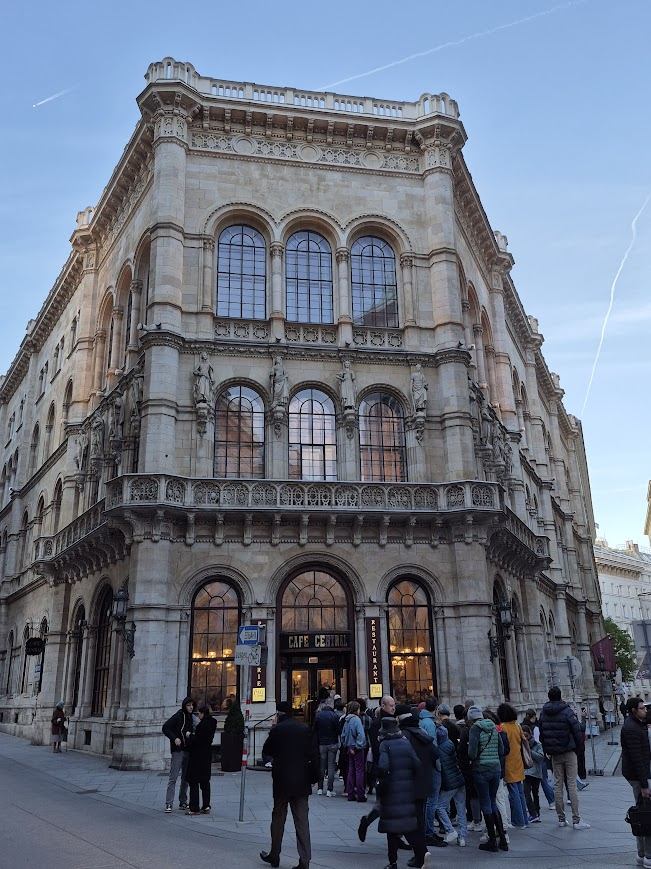
(아마 사람들 생각이 다 비슷한지 카페 첸트랄은 전세계에서 몰려든 관광객들이 한번쯤 가보겠다고 저렇게 장사진을 이루고 있었습니다. 사진 속에는 줄이 좀 짧아 보이는데, 실제로는 사진 프레임 밖에 더 길었습니다.)
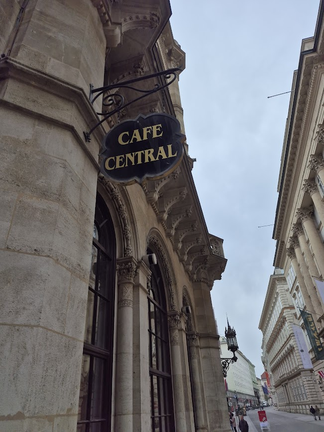
(아, 저 카페 이름이 카페 센트랄이냐 카페 첸트랄이냐에 대해서는 저도 잘 몰랐는데, Café Central은 원래 독일어가 아니라 불어입니다. 독일어로는 센트럴이 Zentral(첸트랄)이지요. 어느 나라나 외국어를 간판에 쓰는 것은 마찬가지인 모양입니다. 또 독일어로 커피는 Der Kaffee지만 독일어로도 커피숍은 불어식으로 Das Café 라고 합니다. 그래서, Z가 아니라 C로 시작하는 저 표현은 불어 상트랄(실제 발음은 송트랄에 더 가깝습니다)이라고 해야 하는데, 일본 사람들이 핫커피를 '호또고히'라고 고집스럽게 발음하는 것처럼, 독일 사람들도 카페 상트랄이 아니라 카페 첸트랄이라고 발음한다고 합니다.) 처음엔 오후 늦게 그냥 가봤는데, 줄이 너무 길어서 일단 입장 포기했고, 인터넷을 뒤져 본 뒤, 예약을 하거나 (이미 늦었음) 아침에 오픈런을 하면 된다길래 다음날 아침 8시30분에 가보니 기다림 없이 입장이 가능했습니다. 막상 들어가 본 카페 첸트랄은, 개인적으로는 매우 마음에 들었습니다. 일단 카페 내부의 천정 높이가 매우 높아서 그런지, 많은 사람들이 제각각 이야기를 하고 있음에도 별로 시끄럽지가 않았어요. 커피 맛은 제가 코로나 이후 일부 후각 세포에 영구 손상이 있어서 그런지 모르겠으나 솔까말 그냥 우리집에서 제가 내린 커피와 크게 다른 것 같지는 않았습니다만, 음식은 꽤 먹을만 했습니다. 다만 가격은 상당히 비쌌는데, 어차피 전세계가 인플레로 신음하던 시점이라서, 오스트리아 사람들에게도 비싼 가격이라니까 큰 불만은 없었습니다.
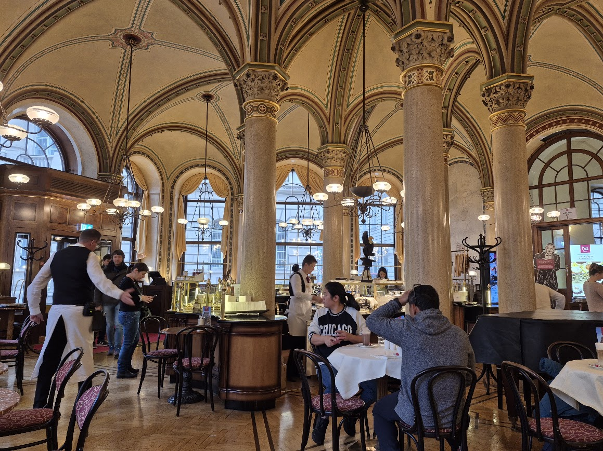
(내부는 보시는 바와 같이 아름다운 천정 구조가 인상적입니다.)
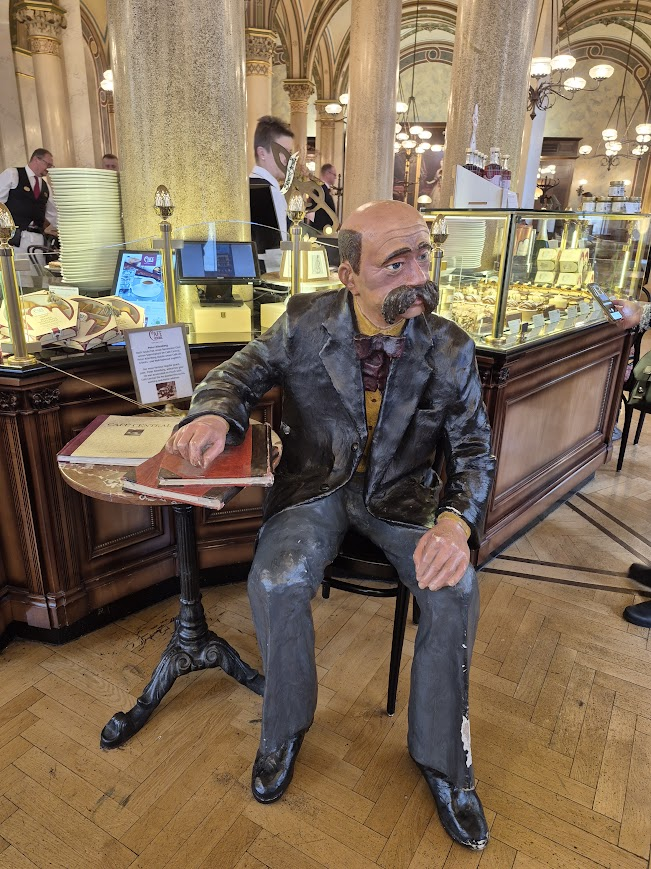
(카페 출입문 바로 안쪽에 앉아 있는 저 등신상(욕 아님다)의 주인공은 당시 유명했던 시인 페터 알텐베르크 (Peter Altenberg)입니다. 당시 트로츠키와 함께 가장 유명하던 카페 첸트랄 죽돌이였다고 합니다. 그래도 유명세에 있어서는 트로츠키가 훨씬 더 유명할 텐데 왜 알텐베르크의 상을 마스코트로 세웠을까요? 아무리 자유로운 도시라고 해도, 붉은 군대의 창시자인 공산주의자를 마스코트로 하긴 좀 그랬나 보지요. 게다가 스탈린과의 관계도 있고 하니, 트로츠키를 마스코트로 세워두면 진짜 빨갱이들도 싫어할 것 같습니다.)
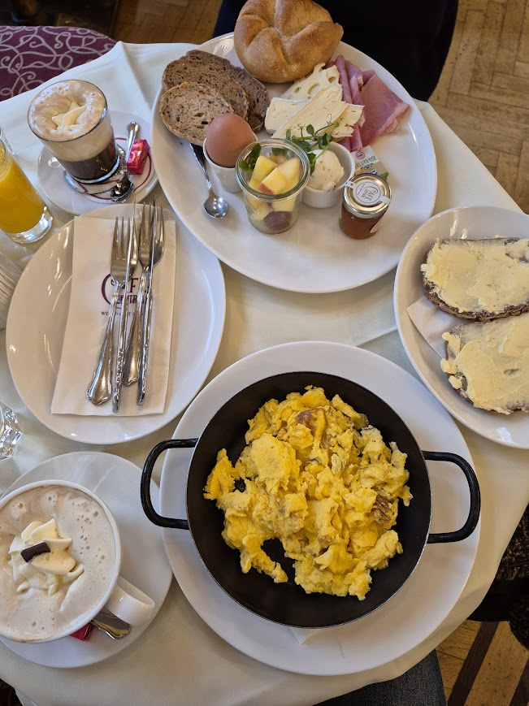
(와이프는 뭔가 세트 메뉴를 시켰고, 저는 스크램블드 에그와 버터 바른 빵을 시켰습니다.)
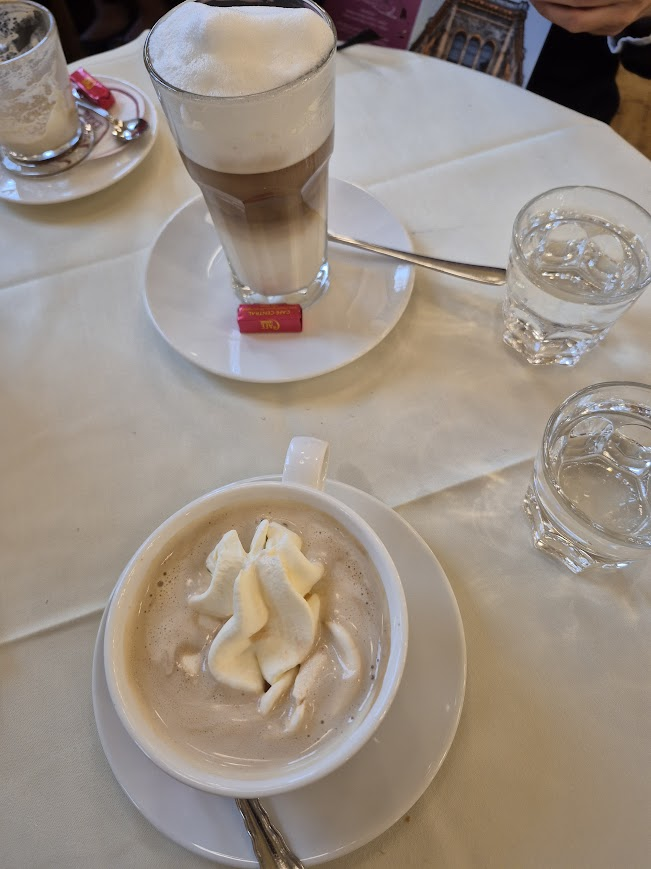
(거기 간 김에 뽕을 뽑으려고 한 3시간 앉아 있었습니다. 제가 읽은 바로는 얼마나 오래 앉아있든 웨이터들이 눈치 안 준다고 했는데, 실제로는 2시간 정도 지나니까 빈 그릇을 치우러 오더라구요. 그래서 스스로 눈치 보여서 두 번째 커피를 시켰습니다. 저 사진 아래쪽 크림 얹은 커피가 빈의 대표적 커피인 비너 멜랑주 (Wiener Melange)입니다. 번역하면 비엔나풍 라떼인데, 사실 멜랑주(Melange)라는 것도 독일어가 아니라 '혼합물'이라는 뜻의 불어 mélange에서 나온 단어입니다. 더 이상한 것은 불어로는 멜랑쥬라고 읽지만 빈의 독일어 액센트로는 멜랑슈(쉬) 정도로 읽어야 한답니다.)
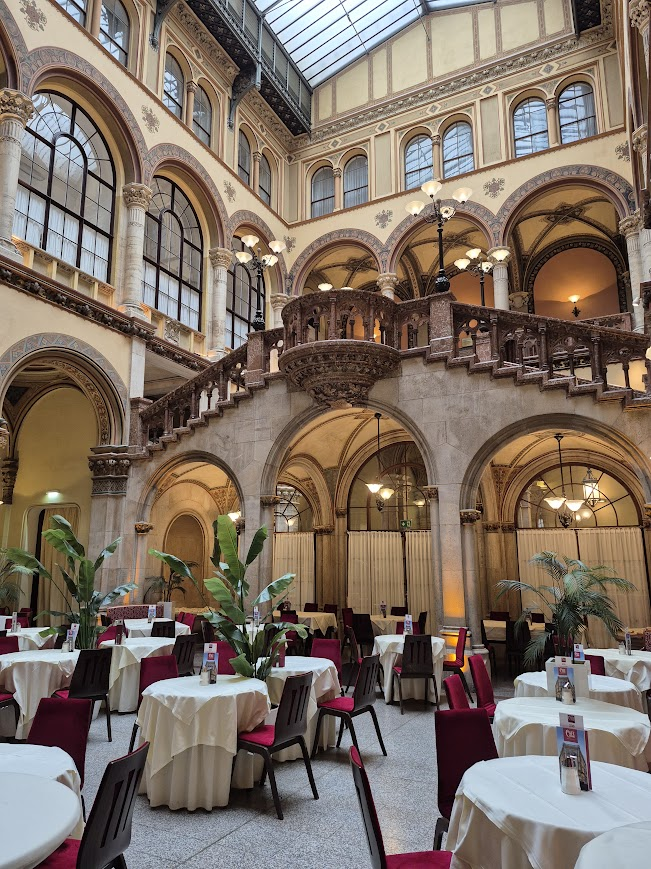
(카페 첸트랄은 제가 눈으로 대충 보니 테이블이 한 30개 정도 되는 매우 큰 카페인데, 좁은 홀로 연결된 매장 뒷편에는 또 그 정도 크기의 매장이 이렇게 또 있습니다. 화려한 계단과 장식물이 있고 많은 테이블들이 세팅된 것을 보면 여기는 점심이나 저녁 때만 영업을 하는 곳일까요? 제가 이 매장 뒷편까지 와 본 것은 트로츠키가 항상 앉았다는 테이블이 어디인지 지나가는 웨이터에게 물어보니 저 뒤쪽이라고 하길래 와본 것인데, 다른 웨이터에게 물어보니 또 엉뚱한 자리를 가리키더군요. 나중에 찾아보니 카페 첸트랄도 화재 등으로 인해 내부 개장을 싹 새로 했기 때문에, 어느 것이 트로츠키의 고정석이었고 어느 것이 프로이트가 즐겨 앉던 자리인지가 다 무의미한 것이었습니다.) 그런데 가난한 공산주의자 트로츠키는 그렇게 비싼 카페에서 어떻게 출근 도장을 찍고 죽돌이 노릇을 할 수 있었을까요? 아니, 그 전에, 트로츠키는 대체 어떻게 우아하고 비싼 도시 빈에서 살 수 있었던 것일까요? 당시 오스트리아는 공산주의자들에게 호의적인 나라여서 트로츠키를 체포하지 않았던 것일까요? 또 고국에서 혁명을 꿈꾸다 박해받는 정치적 난민으로 입국이 허용된 가난한 외국인 망명객은 강남 사거리의 카페에 출근해서 비싼 커피를 홀짝일 것이 아니라 어디 지방 소도시의 공장이나 농장 같은 곳에서 일하면서 투쟁 자금을 모아야 하는 것 아닌가요? 그런 궁금증에 대해 하나씩 알아보면 의외로 재미있는 사실들을 알게 됩니다. 먼저, 당시에도 카페 첸트랄은 지금처럼 빈에서도 매우 유명한 카페로서, 상당히 비싼 고급 카페였습니다. 트로츠키는 원래 우크라이나 유태인 자작농 집안 출신으로서, 어릴 때부터 니콜라예프(지금의 미콜라이우 Mykolaiv)와 오뎃사(Odesa)에서 공부할 정도의 여유는 있는 사람이었습니다만, 그렇다고 결코 부자라고는 할 수 없는 젊은이였습니다. 특히 해외로 망명했을 때는 막 유배지에서 탈출한 상태였으므로 더더욱 카페 첸트랄에서 우아하게 커피 한 잔의 여유를 즐길 형편은 아니었습니다. 그럼에도 그가 부득부득 카페 첸트랄로 출근했던 것은 나름 이유가 있었습니다.
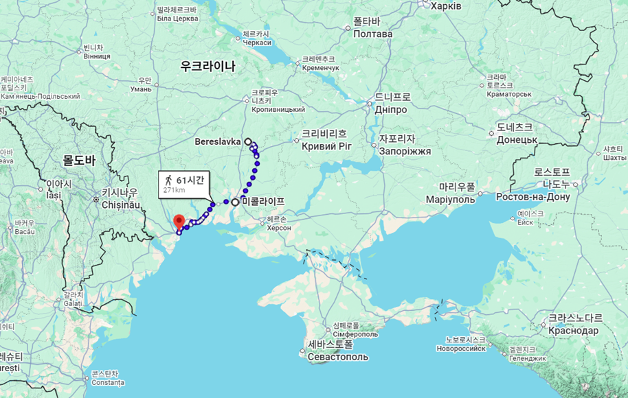
(트로츠키의 출생지인 베레슬라브카(Bereslavka)와 그가 공부한 미콜라이우 및 오데사를 연결한 선입니다. 트로츠키는 어린 시절 집에서 러시아어와 우크라이나어를 섞어서 썼다고 하며 스스로가 유태인이라는 것을 알고 있었습니다. 그러나 그는 스스로를 우크라이나인이라는 정체성으로 생각해본 적이 없었고, 유태인으로서 유대교를 믿은 적도 없으며, 나중에 소련의 요직에 오른 뒤에 러시아 내의 유태인들이 같은 동포에게 도움을 달라고 했을 때 그런 민족주의에 기반한 연줄에 기대려는 행위에 대해 무척 화를 냈다고 합니다. 그의 모국어는 어디까지나 러시아어였고, 우크라이나어도 어느 정도 할 줄 알았으나 매우 능숙하지는 않았습니다.) 일단, 트로츠키가 왜 하필 오스트리아 빈을 망명지로 택했는지를 보셔야 합니다. 원래 런던과 파리가 유럽의 중심지라서 거기엔 이미 러시아 망명객들의 네트워크가 형성되어 있었고 트로츠키도 그걸 잘 알고 있었으며 직접 체험하기도 했습니다. 실은 트로츠키에게 이건 두 번째 탈옥이자 망명이었고, 트로츠키는 이미 1902년에 탈옥하여 1차 망명을 한 경험이 있었습니다. 레닌도 그때 런던에서 처음 만났고, 이미 동지이자 첫 아내인 알렉산드라 소콜롭스카야(Aleksandra Sokolovskaya)가 시베리아 유형지에 남아 있었음에도 파리에서 새로운 여성 나탈리아 세도바(Natalia Sedova)를 만나 결혼까지 했던 것입니다. 그런데도 굳이 오스트리아 빈을 고른 이유는 혁명가로서의 그의 특성과 생계 때문이었습니다.
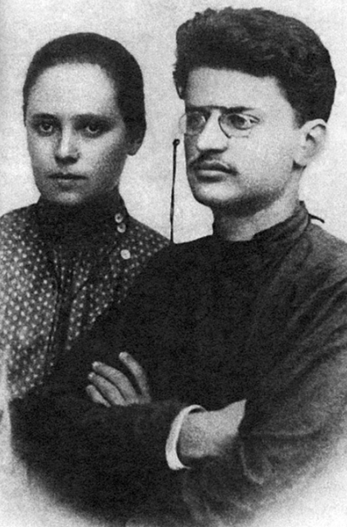
(트로츠키와 그의 첫 번째 아내 알렉산드라 소콜롭스카야입니다. 1902년 직전의 사진입니다. 원래 트로츠키는 공산주의자가 아니었으나, 미콜라이우의 고등학교에서 유학하던 시절 총명하고 활발한 토론 상대였던 마르크스주의자 알렉산드라에 대항하기 위해서 마르크스의 저서를 읽다가 공산주의로 개종하게 되었고 결국 그녀와 결혼까지 했습니다. 그러니 여러분들 자녀에게 책을 읽게 하고 토론에 참여하게 하는 것이 얼마나 위험한 일인지 이제 아셨을 것입니다. 자녀분들에겐 유튜브와 스맛폰 게임을 권유하는 것이 좋습니다... 이건 농담이지만 알렉산드라의 인생은 이후 매우 불행했습니다. 함께 유배 중이던 트로츠키에게 자신과 딸 둘을 버려두고 혼자 탈출하라고 권유했던 것도 알렉산드라였고, 트로츠키가 파리에서 바람이 나서 자신을 버린 이후에도 그녀는 트로츠키와 원수 관계가 되지는 않았으며 딸 둘을 혼자 키우며 고달픈 생계와 함께 공산주의 활동을 이어갔습니다. 그러나 딸 둘이 모두 일찍 죽고 (하나는 병사, 하나는 자살), 자신도 트로츠키의 모든 흔적을 지워버리려는 스탈린에 의해 WW2 발발 직전 어느 시기에 처형된 것으로 알려져 있습니다. 히틀러도 나쁜 놈이지만 스탈린도 진짜 진짜 나쁜 놈입니다.)
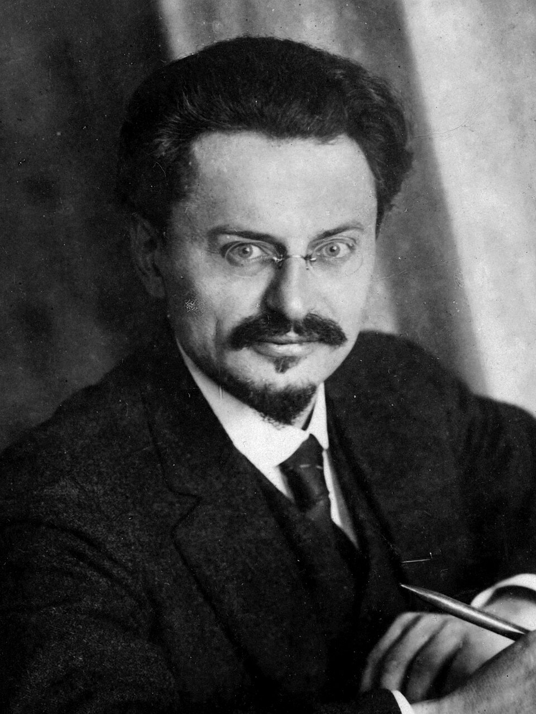
(1918년, 이제 좀 상황이 나아진 상태에서의 트로츠키의 모습입니다. 눈빛이... 약간 맑은 눈의 광인 같기도 하고, 아무튼 선량한 얼굴로는 보이지 않네요. 레닌은 사망하기 전 1923년 초에 공산당에 대한 유언장을 남겼는데, 거기엔 트로츠키와 스탈린에 대한 평가도 들어 있었습니다. 요약하면 트로츠키는 자만심이 강하고 행정적인 것에 집착하는 경향이 있지만 현재 당내에서 가장 유능한 인물이라고 했고, 스탈린에 대해서는 '뭐야 잰? 나도 쟨 무섭다야, 쟤 사고 칠 거 같아, 쟤 끌어내리는 것이 맞지 않아?' 정도였답니다.) 일단 트로츠키는 러시아 혁명가들 중에서도 상당히 유명한 인물로서, 레닌도 1902년 런던에서 그를 만나기 이전부터 그의 글을 통해 트로츠키를 알고 있을 정도였지만, 그는 어디까지나 비주류에 속했습니다. 레닌이 러시아 공산주의에 있어서 비교불가의 태산북두이고, 당시 스탈린은 이름 없는 혁명 행동대장 정도였지만 조직력을 키우고 있었던 것에 비해, 트로츠키는 그 뛰어난 사상 이론과 글, 그리고 연설을 통해 이름을 날리고 있었습니다. 그쪽 세계에서 실력파로 유명하긴 하지만 소위 당내 인맥이나 조직이 전혀 없었던 점에서는 굳이 따지면 유시민 정도에 해당한다고 보면 될 것 같습니다. 특히 당시 런던과 파리는 볼셰비키(Bolsheviks, 다수파라는 뜻)와 멘셰비키(Mensheviks, 소수파라는 뜻) 간의 당내 파벌 싸움이 가장 격렬하게 벌어지던 곳이었습니다. 원래 쩌리들의 싸움이 가장 치열하다고, 당시 러시아 공산당은 아직 집도 절도 없이 국내에서는 숨어지내고 국외에서는 떠도는 형편이었지만 볼셰비키 vs. 멘셰비키 간의 투쟁은 매우 살벌한 편이었습니다. 트로츠키는 양파의 통합을 주장하는 비파벌주의라서 그도 볼셰비키를 이끄는 레닌과 의견 충돌이 있었고, 그래서 더더욱 빈을 망명지로 택했던 것입니다.
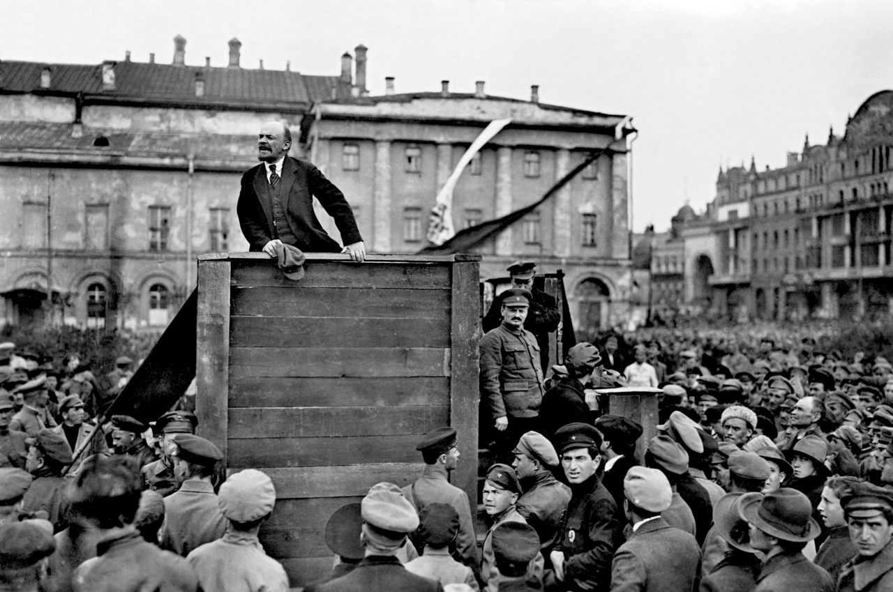
(1920년 모스크바에서 대중에게 연설 중인 레닌, 그리고 그 연단 오른쪽 아래에서 군복 차림으로 서있는 트로츠키의 모습입니다. 둘 다 글 쓰기도 잘 하고 연설도 잘 하는 편이었는데, 글과 연설에 있어 대중을 선동시키는 감성적인 측면에서는 레닌보다 트로츠키가 한 수 위였다고 합니다. 스탈린은 외모와는 달리 목소리가 크지 않았고, 연설 솜씨도 그냥 교장 선생님 훈화 수준이었다고 합니다. 그러나 스탈린의 성품은 교장 선생님과는 전혀 비교가 되지 않았지요.) 비교적 최근까지도 우리나라에서 외국이라고 하면 미국을 뜻했듯이, 당시 러시아에서도 외국이라고 하면 독일을 뜻할 정도로 독일은 러시아에 큰 영향을 끼치고 있었고, 그건 공산주의자들 사이에서도 마찬가지였습니다. 마르크스와 엥겔스가 모두 독일인인 것을 보듯이, 원래 공산주의의 원산지가 독일이었으니 더욱 그랬습니다. 게다가 트로츠키는 영어나 프랑스어를 그렇게 잘 하는 편은 아니었습니다. 그가 가장 잘 하는 외국어가 독일어였는데, 다만 책으로만 독일어를 배워서 그랬는지 읽고 쓰는 것은 잘 해도 말하고 듣는 것은 다소 약한 수준이었습니다. 그래서 트로츠키는 원래 베를린에 자리를 잡으려고 했다고 합니다. 특히 WW1 이전의 독일은 지금의 폴란드 대부분과 지금의 러시아 일부(동프로이센)까지 차지하는 훨씬 더 큰 제국이었으니까요. 하지만 레닌 등 다른 러시아 혁명가들이 베를린에 자리를 잡지 않은 이유가 다 있었습니다. 당시 독일은 어느 나라보다도 군국주의 사상이 강력한 나라라서 공산주의자에 대한 경찰의 감시와 탄압이 매우 심했습니다. 그래서 레닌도 트로츠키도 독일에는 발을 들이지 못했습니다. 생계 때문에라도 트로츠키는 런던이나 파리 대신 빈을 택했습니다. 꽤 넉넉한 중상층 지식인 집안 출신이었던 레닌의 경우엔 저작권과 고료 등의 수입도 있었지만 꽤 큰 영지를 가지고 있던 어머니로부터 생활비 지원을 받을 수 있었습니다만, 트로츠키는 정말 자신의 힘만으로 자신과 가족의 생계를 꾸려나가야 했습니다. 망명 생활 동안 트로츠키의 직업은 기자였습니다. 그는 키에프스키야 미슬(Kievskaya Mysl, 키예프 사상(思想)지) 등의 러시아 및 우크라이나 신문들에 기사를 보내어 얼마 안 되는 고료를 받음으로써 혁명 활동과 생계를 동시에 수행했습니다. 그렇게 러시아 본토와의 연락을 유지하려면 아무래도 런던이나 파리보다는 러시아와 더 가까운 빈이 더 유리했습니다. 소련 건국 이후 냉전 시기 내내 러시아의 국영신문사로 유명했던 프라우다(Pravda, '진실'이라는 뜻) 지를 트로츠키 혼자서 창간한 것도 바로 빈에서였습니다. 단, 프라우다지는 트로츠키의 돈과 시간만 잡아먹었을 뿐 그의 어려운 생계에는 1도 도움이 되지 않았다고 합니다.
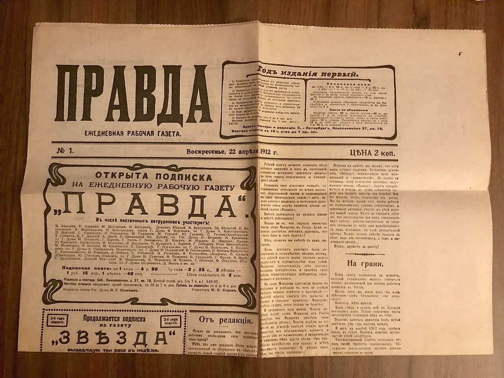
(1912년 러시아 공산당의 공식 신문이 된 프라우다지의 초판 인쇄물입니다. 원래 프라우다는 1903년 모스크바에서 어떤 부유한 철도기사가 발간을 시작했다가 흐지부지 되었는데, 1908년 트로츠키가 편집을 맡게 되면서 아예 발행처를 빈으로 옮겼습니다. 나중에 1912년 멘셰비키와의 당내 투쟁에서 승리한 레닌이 프라우다지를 상트 페체르부르그로 옮겨와 공식 공산당 기관지로 만들었습니다. 저는 소련 망하면서 이 신문사도 망한 줄 알았는데 놀랍게도 지금도 발간이 되고 있다네요.) 이야기가 또 삼천포로 샜습니다만, 다시 카페 첸트랄로 되돌아오겠습니다. 그렇게 바쁘고 가난하게 살던 트로츠키는 과연 어떻게 고급 커피숍이었던 카페 첸트랄로 매일 출근할 수 있었을까요? 분량 조절 실패로 다음 주로 넘어갑니다.